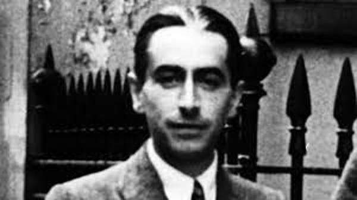
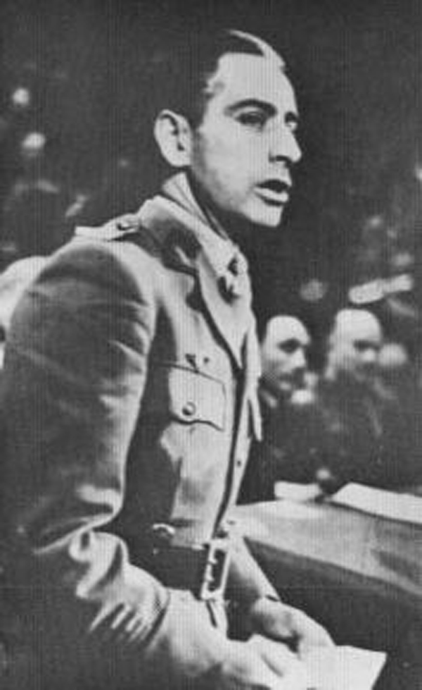
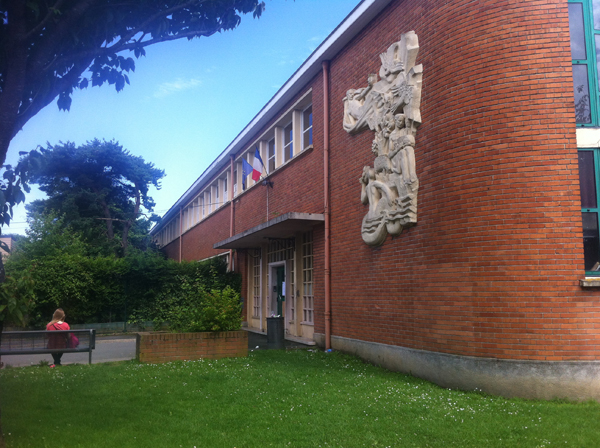

Rubrique Culture
|
Pierre Brossolette, journaliste et homme politique Pierre Brossolette 1903 / 1944 Pierre Brossolette, est un journaliste et homme politique socialiste français. Il fut l'un des principaux dirigeants et héros de la Résistance française. Ses cendres ont été transférées au Panthéon, le 27 mai 2015.  Pierre Brossolette  Discours d'Hommage aux morts de la France Combattante à l'Albert-Hall en 1943, à Londres.  Ecole P.Brossolette / Ronchin 
|